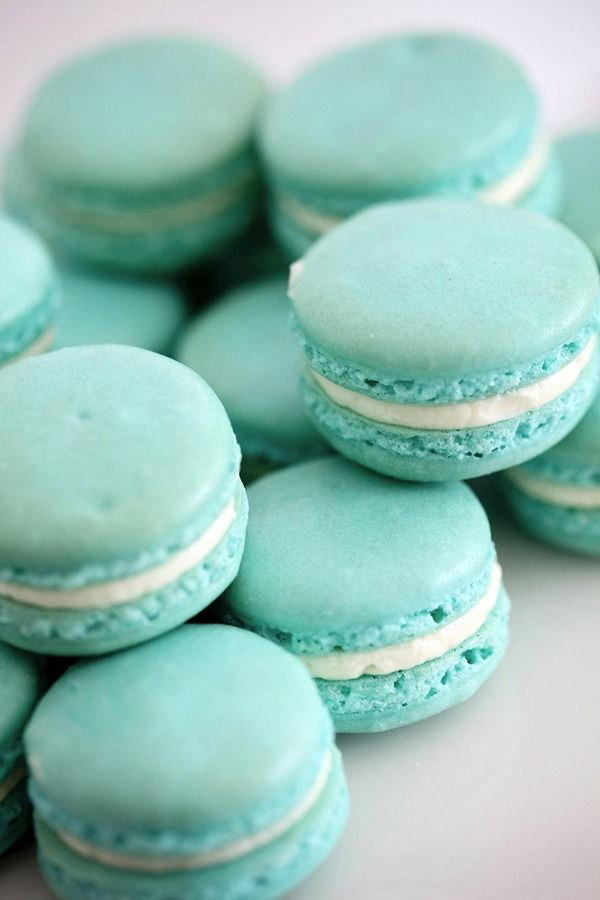

Mano receptas

Ingredientai:
- Kiaušiniai 3 vnt. vidutinio dydžio kiaušinių baltymai
- Cukrus 40 g
- Miltelinis cukrus 180 g
- Migdolai 110 g skaldyti migdolai arba galima naudoti migdolų esenciją
- Druska 1 žiupsnelis
- Maistiniai dažai 10 ml
- Juodasis šokoladas 100 g šokoladiniam įdarui
- Grietinėlė 4 valg. š. šokoladiniam įdarui
- Sviestas 20 g šokoladiniam įdarui
- Vanilinis cukrus 4 g šokoladiniam įdarui
Kaip gaminti:
- Kiaušinių baltymus atskirkite nuo trynių ir, prieš pradėdami gaminti, palaikykite kambario temperatūroje apie 24 valandas.
- Jei naudosite migdolus, sumalkite juos iki miltelių ir kelis kartus persijokite per smulkų sietelį. Migdolų miltus sumaišykite su milteliniu cukrumi, dar kartelį sumalkite ir persijokite per sietelį. Miltai turi būti be gumuliukų, antraip Macarons paviršius bus nelygus ir gali susidaryti kauburėliai ar kiti nelygumai.
- Kiaušinių baltymus plakite įbėrę žiupsnelį druskos. Vėliau suberkite cukrų ir plakite, kol susidarys standžios putos.
- Į išplaktus baltymus suberkite migdolų miltus (arba įlašinkite porą lašų migdolų esencijos) ir gerai sumaišykite. Nereikia ilgai sukti. Rekomenduojama iki 30 apsukimų.
- Jei naudosite maistinius dažus, paskirstykite baltymus po lygiai į tiek dubenėlių, kiek norėsite spalvų. Į kiekvieną dubenėlį įlašinkite po porą maistinių dažų lašų, atsargiai ir kruopščiai sumaišykite.
- Sukrėskite spalvotą baltymų masę į konditerinį maišelį. Jei neturite po ranka, galite naudoti paprastą šaukštelį.
- Ant kepimo popieriumi išklotos skardos išspauskite maždaug 3 cm skersmens skritulėlius. Stenkitės, kad jie gautųsi vienodi. Pirštu užlyginkite sausainio paviršių, kad būtų lygus ir be išspaudimo žymės. Palikite tarp jų nedidelius tarpus, nes kepdami sausainukai pučiasi.
- Palikite juos gerai vėdinamoje ir šiltoje patalpoje apie 30–45 min., kad sausainių paviršius apdžiūtų, mat kitaip kepant jis gali sutrūkinėti.
- Kol sausainiai džiūna, įkaitinkite orkaitę iki 150 °C. Kepkite skanėstus apie 12–15 min., kol jų viršus taps sausas. Macarons kepimas labai subtilus, todėl atidžiai stebėkite kepimo procesą, nes sausainiai kepa nevienodai ir gali pradėti ruduoti, o tai negerai. Iškepusius Macarons palikite vėsti kambario temperatūroje. Nuo kepimo popieriaus imkite tik gerai atvėsus!
- Kol sausainiai vėsta, pasigaminkite įdarą. Šokoladą ištirpinkite garų vonelėje. Įdėkite sviestą, vanilinį cukrų ir supilkite grietinėlę. Viską sumaišykite.
- Padėkite įdarą į šaldytuvą, kad šiek tiek sustingtų (iki tokios masės, kad būtų patogu tepti). Macarons atvėsus, atsargiai imkite po vieną ir pertepkite šokolado mase. Prieš valgydami palaikykite bent parą, kad pastovėtų ir sustingtų įdaras. Tiekite kambario temperatūros.